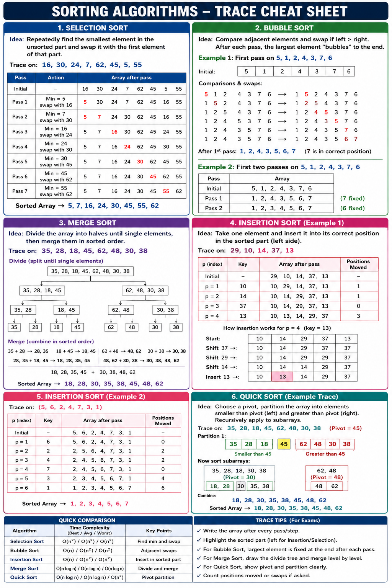

Level 0A root
Level 1B, C children of A
Level 2D, E, F, G leaves/subtrees
Final Exam Revision
Compact lecture revision for trees, Big O, sorting traces, search, MCQs, and cheat sheets.
Lecture Dashboard
Binary trees, BST search, insertion trace, and traversals.
Algorithm AnalysisCount statements, loops, recursion, and simplify complexity.
Lecture 6Selection, Bubble, Merge, Insertion, and Quick Sort traces.
Find TopicsQuickly locate terms across the lecture notes and practice.
PracticeExam-style questions with immediate answer checks.
ReviewShort memory cards for formulas, rules, and traces.
Study Chunks
Interactive Visualizers
Use the tabs to inspect tree anatomy, array representation, binary search, BST search, insertion, and traversal output.
Output:
Lecture Code Only
Trace Practice
MCQ / SA
Cheat Sheet
Algorithm Analysis
Trace statements, loops, and recursion. The goal is to identify how many times lines run, then simplify to Big O.
Recognition
Cheat Sheet
Trace Visualizer
Practice
Lecture 6
Sorting revision for Selection Sort, Bubble Sort, Merge Sort, Insertion Sort, and Quick Sort. The instructor focus is trace only: follow array states, passes, swaps, shifts, merges, partitions, and pivots.
Trace Lab
Interactive Trace
Practice the exam trace for each algorithm step by step. Focus on array states, comparisons, swaps, fixed positions, pivots, and merge groups.
| Step | Action | Array State | Exam Note |
|---|
Cheat Sheet

Practice
Search